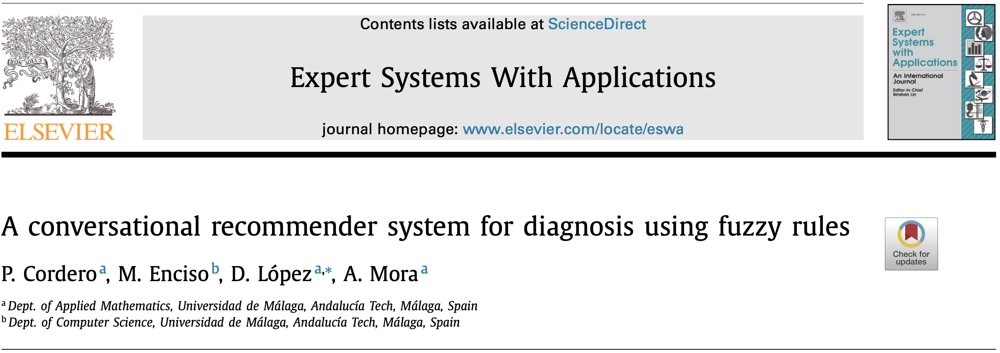
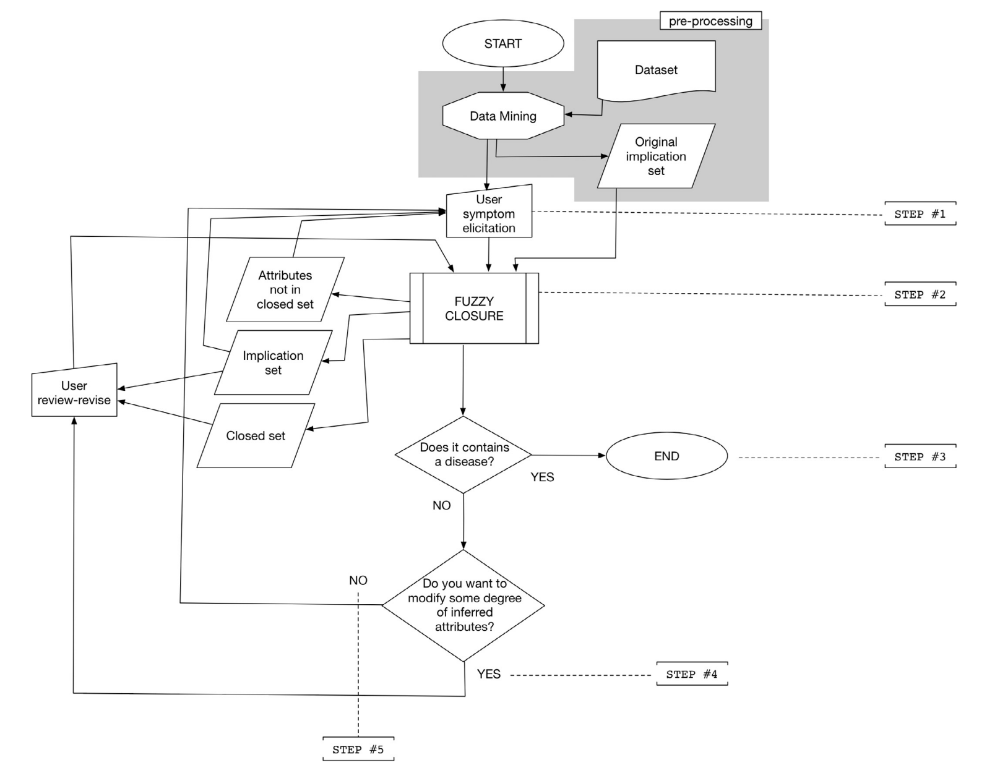
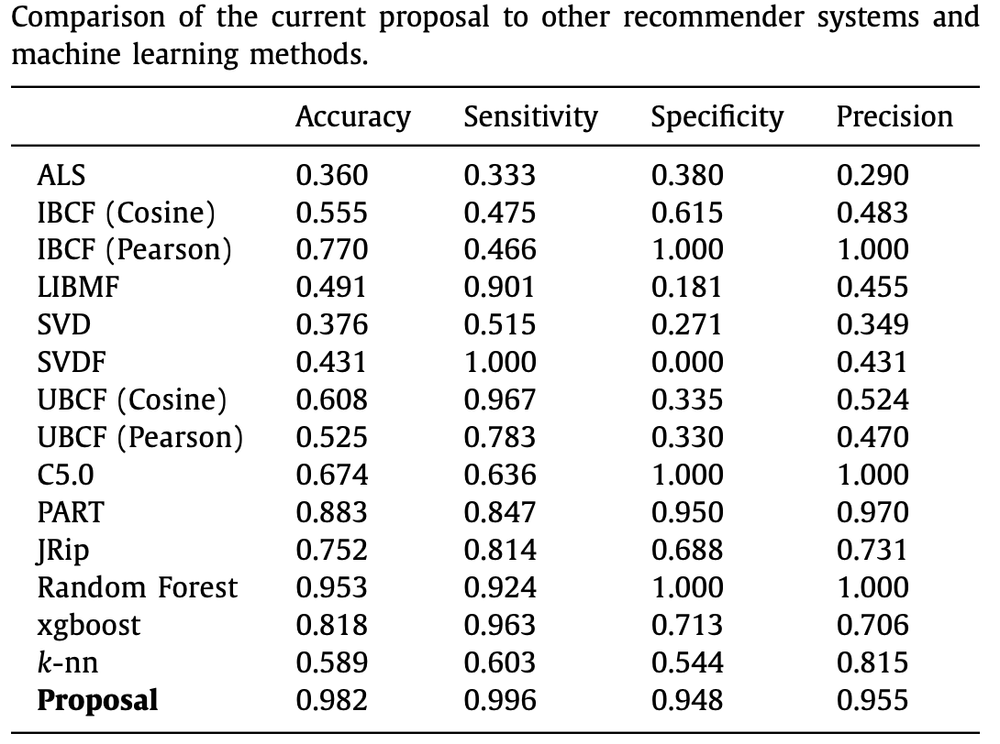

| COSAS_1 | COSAS_2 | COSAS_3 | COSAS_4 | COSAS_5 | COSAS_6 | COSAS_7 | FICAL_1 | FICAL_2 | FICAL_3 | FICAL_4 | FICAL_5 | FICAL_6 | FICAL_7 | FICAL_8 | FICAL_9 | SCIDII_10 | SCIDII_11 | SCIDII_12 | SCIDII_13 | SCIDII_14 | SCIDII_15 | SCIDII_16 | SCIDII_17 | SCIDII_18 | SCIDII_19 | SCIDII_20 | SCIDII_21 | SCIDII_22 | SCIDII_23 | dx_ss | dx_other |
|---|---|---|---|---|---|---|---|---|---|---|---|---|---|---|---|---|---|---|---|---|---|---|---|---|---|---|---|---|---|---|---|
| absent | absent | absent | absent | absent | absent | absent | absent | absent | absent | mild | mild | absent | absent | absent | absent | absent | absent | absent | absent | absent | absent | absent | absent | absent | absent | absent | absent | absent | absent | 1 | 0 |
| absent | moderate | moderate | moderate | absent | absent | absent | absent | absent | absent | absent | absent | absent | absent | absent | absent | absent | absent | absent | absent | absent | absent | absent | absent | absent | absent | absent | absent | absent | absent | 1 | 0 |
| moderate | extreme | absent | absent | absent | absent | absent | mild | absent | absent | absent | mild | absent | mild | absent | mild | absent | absent | absent | absent | absent | absent | absent | absent | absent | absent | absent | absent | absent | absent | 1 | 0 |
| absent | absent | absent | absent | absent | absent | absent | mild | moderate severe | mild | absent | absent | absent | absent | absent | mild | moderate | absent | absent | absent | absent | absent | absent | absent | moderate | absent | absent | absent | absent | absent | 1 | 0 |
| absent | absent | absent | moderate | absent | absent | absent | mild | moderate severe | moderate severe | moderate severe | mild | mild | mild | absent | mild | absent | absent | absent | absent | absent | absent | absent | absent | absent | absent | extreme | absent | absent | absent | 1 | 0 |
| absent | moderate | absent | absent | absent | extreme | absent | absent | absent | absent | mild | mild | absent | absent | absent | absent | absent | absent | absent | absent | absent | absent | absent | absent | absent | absent | absent | absent | absent | absent | 1 | 0 |
| moderate | absent | absent | absent | absent | absent | absent | absent | absent | absent | absent | absent | absent | absent | absent | absent | absent | absent | absent | absent | absent | absent | absent | absent | absent | absent | absent | absent | absent | absent | 1 | 0 |
| moderate | moderate | moderate | absent | absent | absent | absent | mild | extreme | moderate severe | moderate severe | mild | moderate severe | absent | mild | mild | absent | absent | absent | absent | absent | absent | absent | absent | absent | absent | absent | absent | absent | absent | 1 | 0 |
| moderate | absent | absent | absent | absent | absent | absent | absent | absent | absent | absent | absent | absent | absent | absent | absent | absent | absent | absent | absent | absent | absent | absent | absent | absent | absent | absent | absent | absent | absent | 1 | 0 |
| absent | absent | absent | absent | absent | absent | absent | moderate severe | mild | moderate severe | mild | absent | mild | absent | absent | mild | absent | absent | absent | absent | absent | absent | absent | absent | absent | absent | extreme | absent | absent | absent | 1 | 0 |
Recommendation system with fcaR
Steps
How can we use FCA to build a recommender system?
- Preprocess data
- Extract knowledge in the form of implications
- Use the closure wrt the implications as the engine to provide recommendations
- What happens when the closure does not provide an useful recommendation? The Simplication Logic may be of help.
Let us demo this procedure with a real example.
The problem
The aim is to build an automated system using the fcaR package to perform medical diagnosis. We have focused on neurological pathologies since, in recent years, an increasing number of initiatives have appeared to share, curate, and study specific, prevalent brain pathologies. Among these pathologies, schizophrenia is of the highest interest, and public, curated repositories have been released.
We are provided with a dataset consisting of the results of psychological and psychiatrical tests to 105 individuals:
Note that we have two columns indicating the diagnosis:
dx_ss: Strict schizophrenia.dx_other: Bipolar disorder.
The other attributes are:
COSAS_n: The Simpson-Angus Scale, 7 items to evaluate Parkinsonism-like alterations, related to schizophrenia, in an individual.FICAL_n: The Calgary Depression Scale for Schizophrenia, 9 items (attributes) assessing the level of depression in schizophrenia, differentiating between positive and negative aspects of the disease.SCIDII_n: The Structured Clinical Interview for DSM-III-R Personality Disorders, with 14 variables related to the presence of signs affecting personality.
The task is to build a recommender system that, given the symptoms or signs of an individual, predict the diagnose, using logic.
Building a recommendation system
0. Preprocess the data
First, scale the context, mapping each textual label to a degree in [0,1]. This procedure is not part of the actual recommendation system, so we will work with the data already preprocessed. It is included in the fcaR package, with the name cobre32. Let us load the library and inspect the dataset.
library(fcaR)
cobre32| COSAS_1 | COSAS_2 | COSAS_3 | COSAS_4 | COSAS_5 | COSAS_6 | COSAS_7 | FICAL_1 | FICAL_2 | FICAL_3 | FICAL_4 | FICAL_5 | FICAL_6 | FICAL_7 | FICAL_8 | FICAL_9 | SCIDII_10 | SCIDII_11 | SCIDII_12 | SCIDII_13 | SCIDII_14 | SCIDII_15 | SCIDII_16 | SCIDII_17 | SCIDII_18 | SCIDII_19 | SCIDII_20 | SCIDII_21 | SCIDII_22 | SCIDII_23 | dx_ss | dx_other |
|---|---|---|---|---|---|---|---|---|---|---|---|---|---|---|---|---|---|---|---|---|---|---|---|---|---|---|---|---|---|---|---|
| 0.0 | 0.0 | 0.0 | 0.0 | 0 | 0 | 0 | 0.00 | 0.00 | 0.00 | 0.33 | 0.33 | 0.00 | 0.00 | 0.00 | 0.00 | 0.0 | 0 | 0 | 0 | 0 | 0 | 0 | 0 | 0.0 | 0 | 0 | 0 | 0 | 0 | 1 | 0 |
| 0.0 | 0.5 | 0.5 | 0.5 | 0 | 0 | 0 | 0.00 | 0.00 | 0.00 | 0.00 | 0.00 | 0.00 | 0.00 | 0.00 | 0.00 | 0.0 | 0 | 0 | 0 | 0 | 0 | 0 | 0 | 0.0 | 0 | 0 | 0 | 0 | 0 | 1 | 0 |
| 0.5 | 1.0 | 0.0 | 0.0 | 0 | 0 | 0 | 0.33 | 0.00 | 0.00 | 0.00 | 0.33 | 0.00 | 0.33 | 0.00 | 0.33 | 0.0 | 0 | 0 | 0 | 0 | 0 | 0 | 0 | 0.0 | 0 | 0 | 0 | 0 | 0 | 1 | 0 |
| 0.0 | 0.0 | 0.0 | 0.0 | 0 | 0 | 0 | 0.33 | 0.67 | 0.33 | 0.00 | 0.00 | 0.00 | 0.00 | 0.00 | 0.33 | 0.5 | 0 | 0 | 0 | 0 | 0 | 0 | 0 | 0.5 | 0 | 0 | 0 | 0 | 0 | 1 | 0 |
| 0.0 | 0.0 | 0.0 | 0.5 | 0 | 0 | 0 | 0.33 | 0.67 | 0.67 | 0.67 | 0.33 | 0.33 | 0.33 | 0.00 | 0.33 | 0.0 | 0 | 0 | 0 | 0 | 0 | 0 | 0 | 0.0 | 0 | 1 | 0 | 0 | 0 | 1 | 0 |
| 0.0 | 0.5 | 0.0 | 0.0 | 0 | 1 | 0 | 0.00 | 0.00 | 0.00 | 0.33 | 0.33 | 0.00 | 0.00 | 0.00 | 0.00 | 0.0 | 0 | 0 | 0 | 0 | 0 | 0 | 0 | 0.0 | 0 | 0 | 0 | 0 | 0 | 1 | 0 |
| 0.5 | 0.0 | 0.0 | 0.0 | 0 | 0 | 0 | 0.00 | 0.00 | 0.00 | 0.00 | 0.00 | 0.00 | 0.00 | 0.00 | 0.00 | 0.0 | 0 | 0 | 0 | 0 | 0 | 0 | 0 | 0.0 | 0 | 0 | 0 | 0 | 0 | 1 | 0 |
| 0.5 | 0.5 | 0.5 | 0.0 | 0 | 0 | 0 | 0.33 | 1.00 | 0.67 | 0.67 | 0.33 | 0.67 | 0.00 | 0.33 | 0.33 | 0.0 | 0 | 0 | 0 | 0 | 0 | 0 | 0 | 0.0 | 0 | 0 | 0 | 0 | 0 | 1 | 0 |
| 0.5 | 0.0 | 0.0 | 0.0 | 0 | 0 | 0 | 0.00 | 0.00 | 0.00 | 0.00 | 0.00 | 0.00 | 0.00 | 0.00 | 0.00 | 0.0 | 0 | 0 | 0 | 0 | 0 | 0 | 0 | 0.0 | 0 | 0 | 0 | 0 | 0 | 1 | 0 |
| 0.0 | 0.0 | 0.0 | 0.0 | 0 | 0 | 0 | 0.67 | 0.33 | 0.67 | 0.33 | 0.00 | 0.33 | 0.00 | 0.00 | 0.33 | 0.0 | 0 | 0 | 0 | 0 | 0 | 0 | 0 | 0.0 | 0 | 1 | 0 | 0 | 0 | 1 | 0 |
1. Extract knowledge as implications
Let us build the formal context with this dataset:
fc <- FormalContext$new(cobre32)Then, we can find the Duquenne-Guigues basis of implications by using the NextClosure algorithm:
fc$find_implications()How many implications are there in the basis?
fc$implications$cardinality()[1] 985Let us inspect only a few:
fc$implications[5:9]Implication set with 5 implications.
Rule 1: {SCIDII_22 [0.33]} -> {COSAS_1 [0.5], COSAS_2 [0.5], FICAL_1 [0.33],
FICAL_5 [0.33], SCIDII_22, SCIDII_23, dx_ss}
Rule 2: {SCIDII_21 [0.33]} -> {COSAS_1, COSAS_2, COSAS_3, COSAS_4, COSAS_5,
COSAS_6, COSAS_7, FICAL_1, FICAL_2, FICAL_3, FICAL_4, FICAL_5, FICAL_6,
FICAL_7, FICAL_8, FICAL_9, SCIDII_10, SCIDII_11, SCIDII_12, SCIDII_13,
SCIDII_14, SCIDII_15, SCIDII_16, SCIDII_17, SCIDII_18, SCIDII_19, SCIDII_20,
SCIDII_21, SCIDII_22, SCIDII_23, dx_ss, dx_other}
Rule 3: {SCIDII_20 [0.33]} -> {SCIDII_20 [0.5], dx_ss}
Rule 4: {SCIDII_20 [0.67], dx_ss} -> {SCIDII_20}
Rule 5: {SCIDII_19 [0.33]} -> {COSAS_1, COSAS_2, COSAS_3, COSAS_4, COSAS_5,
COSAS_6, COSAS_7, FICAL_1, FICAL_2, FICAL_3, FICAL_4, FICAL_5, FICAL_6,
FICAL_7, FICAL_8, FICAL_9, SCIDII_10, SCIDII_11, SCIDII_12, SCIDII_13,
SCIDII_14, SCIDII_15, SCIDII_16, SCIDII_17, SCIDII_18, SCIDII_19, SCIDII_20,
SCIDII_21, SCIDII_22, SCIDII_23, dx_ss, dx_other}Let us save the implications in another variable to avoid long commands from now on:
imps <- fc$implications2. Use the closure
Let us invent a new individual with some symptoms, creating an object of type Set:
S1 <- Set$new(
attributes = fc$attributes,
COSAS_1 = 1/2, COSAS_2 = 1, COSAS_3 = 1/2,
COSAS_4 = 1/6, COSAS_5 = 1/2, COSAS_6 = 1)
S1{COSAS_1 [0.5], COSAS_2, COSAS_3 [0.5], COSAS_4 [0.17], COSAS_5 [0.5], COSAS_6}If we compute its closure using the implications:
imps$closure(S1)$closure
{COSAS_1 [0.5], COSAS_2, COSAS_3 [0.5], COSAS_4, COSAS_5 [0.5], COSAS_6, dx_ss}we can observe that, in the closure, there appears dx_ss, so, with these symptoms, we can conclude the diagnosis of strict schizophrenia.
We could have done the “FCA” closure, that is, using the concept-forming operators of the formal context:
O1 <- fc$extent(S1)
O1{22, 39 [0.5], 66 [0.5], 108}fc$intent(O1){COSAS_1 [0.5], COSAS_2, COSAS_3 [0.5], COSAS_4, COSAS_5 [0.5], COSAS_6, dx_ss}# Or, together, the closure operator:
fc$closure(S1){COSAS_1 [0.5], COSAS_2, COSAS_3 [0.5], COSAS_4, COSAS_5 [0.5], COSAS_6, dx_ss}Since the implication basis is a sound and complete system, the two closures must coincide.
Note
Which is the advantage of using the implications instead of the concept-forming operators?
We don’t need to store the whole dataset, only the implications, which is a way of knowledge representation.
Furthermore, the use of the simplification logic will give some new features that the classical approach and the FCA approach are not able to provide.
Another example:
S2 <- Set$new(attributes = fc$attributes,
COSAS_4 = 2/3, FICAL_3 = 1/2,
FICAL_5 = 1/2, FICAL_8 = 1/2)
S2{COSAS_4 [0.67], FICAL_3 [0.5], FICAL_5 [0.5], FICAL_8 [0.5]}We can check the closure:
fc$closure(S2){COSAS_4, FICAL_1, FICAL_2, FICAL_3, FICAL_5, FICAL_8, dx_other}imps$closure(S2)$closure
{COSAS_4, FICAL_1, FICAL_2, FICAL_3, FICAL_5, FICAL_8, dx_other}In this case, in the closure set, there appears the attribute dx_other, so this would be the expected diagnosis (bipolar disorder).
A more challenging example:
S3 <- Set$new(attributes = fc$attributes,
COSAS_2 = 1, COSAS_6 = 1,
FICAL_1 = 1/3, FICAL_3 = 1/3)Let us inspect the closure:
imps$closure(S3)$closure
{COSAS_2, COSAS_6, FICAL_1 [0.33], FICAL_2 [0.33], FICAL_3 [0.33]}
Houston, we have a problem!
There is no diagnosis attribute in the closure. What would an expert do?
The expert would take into consideration the present attributes and ask for additional symptoms/tests to be able to arrive at a diagnosis.
3. The Simplication Logic
Simplification Logic (SL) to the rescue!
The SL can be used to compute the closure with respect to a set of implications, providing a simplified set of implications once the original attributes are taken away, and which is equivalent, in some sense, to the original implication system:
The SL_{FD} algorithm makes use of the above equivalence rules to compute the closure X^+ of a set X using a set of implications \Sigma, and return a simplified \Sigma' where the attributes in X^+ do not appear, and such that: \{\varnothing\to X\}\cup \Sigma \equiv \{\varnothing\to X^+\}\cup \Sigma'
result <- imps$closure(S3, reduce = TRUE)We obtain the closure, that is, we get the same information as using the classical scheme.
result$closure{COSAS_2, COSAS_6, FICAL_1 [0.33], FICAL_2 [0.33], FICAL_3 [0.33]}But, in addition, we get this simplified set of implications
result$implications[1:10]Implication set with 10 implications.
Rule 1: {dx_ss, dx_other} -> {COSAS_1, COSAS_3, COSAS_4, COSAS_5, COSAS_7,
FICAL_1, FICAL_2, FICAL_3, FICAL_4, FICAL_5, FICAL_6, FICAL_7, FICAL_8,
FICAL_9, SCIDII_10, SCIDII_11, SCIDII_12, SCIDII_13, SCIDII_14, SCIDII_15,
SCIDII_16, SCIDII_17, SCIDII_18, SCIDII_19, SCIDII_20, SCIDII_21, SCIDII_22,
SCIDII_23}
Rule 2: {SCIDII_21 [0.33]} -> {COSAS_1, COSAS_3, COSAS_4, COSAS_5, COSAS_7,
FICAL_1, FICAL_2, FICAL_3, FICAL_4, FICAL_5, FICAL_6, FICAL_7, FICAL_8,
FICAL_9, SCIDII_10, SCIDII_11, SCIDII_12, SCIDII_13, SCIDII_14, SCIDII_15,
SCIDII_16, SCIDII_17, SCIDII_18, SCIDII_19, SCIDII_20, SCIDII_21, SCIDII_22,
SCIDII_23, dx_ss, dx_other}
Rule 3: {SCIDII_19 [0.33]} -> {COSAS_1, COSAS_3, COSAS_4, COSAS_5, COSAS_7,
FICAL_1, FICAL_2, FICAL_3, FICAL_4, FICAL_5, FICAL_6, FICAL_7, FICAL_8,
FICAL_9, SCIDII_10, SCIDII_11, SCIDII_12, SCIDII_13, SCIDII_14, SCIDII_15,
SCIDII_16, SCIDII_17, SCIDII_18, SCIDII_19, SCIDII_20, SCIDII_21, SCIDII_22,
SCIDII_23, dx_ss, dx_other}
Rule 4: {SCIDII_17 [0.33]} -> {COSAS_1, COSAS_3, COSAS_4, COSAS_5, COSAS_7,
FICAL_1, FICAL_2, FICAL_3, FICAL_4, FICAL_5, FICAL_6, FICAL_7, FICAL_8,
FICAL_9, SCIDII_10, SCIDII_11, SCIDII_12, SCIDII_13, SCIDII_14, SCIDII_15,
SCIDII_16, SCIDII_17, SCIDII_18, SCIDII_19, SCIDII_20, SCIDII_21, SCIDII_22,
SCIDII_23, dx_ss, dx_other}
Rule 5: {SCIDII_15 [0.33]} -> {COSAS_1, COSAS_3, COSAS_4, COSAS_5, COSAS_7,
FICAL_1, FICAL_2, FICAL_3, FICAL_4, FICAL_5, FICAL_6, FICAL_7, FICAL_8,
FICAL_9, SCIDII_10, SCIDII_11, SCIDII_12, SCIDII_13, SCIDII_14, SCIDII_15,
SCIDII_16, SCIDII_17, SCIDII_18, SCIDII_19, SCIDII_20, SCIDII_21, SCIDII_22,
SCIDII_23, dx_ss, dx_other}
Rule 6: {SCIDII_13 [0.33]} -> {COSAS_1, COSAS_3, COSAS_4, COSAS_5, COSAS_7,
FICAL_1, FICAL_2, FICAL_3, FICAL_4, FICAL_5, FICAL_6, FICAL_7, FICAL_8,
FICAL_9, SCIDII_10, SCIDII_11, SCIDII_12, SCIDII_13, SCIDII_14, SCIDII_15,
SCIDII_16, SCIDII_17, SCIDII_18, SCIDII_19, SCIDII_20, SCIDII_21, SCIDII_22,
SCIDII_23, dx_ss, dx_other}
Rule 7: {SCIDII_11 [0.33]} -> {FICAL_3 [0.67], FICAL_6 [0.33], FICAL_9 [0.33],
SCIDII_10, SCIDII_11, SCIDII_12, SCIDII_20, dx_ss}
Rule 8: {FICAL_4 [0.33], SCIDII_10 [0.5], dx_other} -> {FICAL_1 [0.67], FICAL_3,
FICAL_4 [0.67], FICAL_5 [0.33], FICAL_8 [0.33], FICAL_9 [0.67], SCIDII_10}
Rule 9: {SCIDII_14} -> {COSAS_1, COSAS_3, COSAS_4, COSAS_5, COSAS_7, FICAL_1,
FICAL_2, FICAL_3, FICAL_4, FICAL_5, FICAL_6, FICAL_7, FICAL_8, FICAL_9,
SCIDII_10, SCIDII_11, SCIDII_12, SCIDII_13, SCIDII_15, SCIDII_16, SCIDII_17,
SCIDII_18, SCIDII_19, SCIDII_20, SCIDII_21, SCIDII_22, SCIDII_23, dx_ss,
dx_other}
Rule 10: {FICAL_8 [0.67]} -> {FICAL_1 [0.67], FICAL_3 [0.67], FICAL_8}The interpretation of this simplified set of implications is that if we consider that we have all the attributes in S3, then it is equivalent to the original one.
We can narrow the implications by removing redundancies (not needed, but recommended):
result$implications$apply_rules(c('simp', 'rsimp', 'reorder'))Processing batch--> Simplification: from 340 to 274 in 0.088 secs.--> Right Simplification: from 274 to 273 in 0.114 secs.--> Reorder: from 273 to 273 in 0 secs.Batch took 0.202 secs. result$implications[1:10]Implication set with 10 implications.
Rule 1: {FICAL_9 [0.33]} -> {FICAL_6 [0.33]}
Rule 2: {FICAL_8 [0.33]} -> {COSAS_4 [0.5]}
Rule 3: {SCIDII_10 [0.33]} -> {SCIDII_10 [0.5]}
Rule 4: {COSAS_4 [0.33]} -> {COSAS_4 [0.5]}
Rule 5: {COSAS_3 [0.33]} -> {COSAS_3 [0.5]}
Rule 6: {COSAS_1 [0.33]} -> {COSAS_1 [0.5]}
Rule 7: {FICAL_4 [0.33], FICAL_8 [0.33]} -> {FICAL_7 [0.33]}
Rule 8: {FICAL_4 [0.33]} -> {FICAL_5 [0.33], FICAL_6 [0.33]}
Rule 9: {FICAL_3 [0.5]} -> {FICAL_3 [0.67]}
Rule 10: {SCIDII_10 [0.5]} -> {FICAL_3 [0.67]}An expert may be interested only in the rules from which she could derive a diagnosis, so we can simulate that behaviour by filtering the implications and only take into account those in whose RHS there is a diagnosis attribute, and not in the LHS:
result$implications$filter(
rhs = c('dx_ss', 'dx_other'),
not_lhs = c('dx_ss', 'dx_other'),
drop = TRUE)Implication set with 14 implications.
Rule 1: {FICAL_5 [0.33]} -> {dx_other}
Rule 2: {COSAS_3 [0.5]} -> {dx_ss}
Rule 3: {FICAL_7 [0.33]} -> {dx_ss}
Rule 4: {FICAL_6 [0.33], FICAL_8 [0.33]} -> {dx_ss}
Rule 5: {FICAL_4 [0.33], FICAL_8 [0.33]} -> {dx_ss}
Rule 6: {FICAL_8 [0.33], FICAL_9 [0.33]} -> {dx_ss}
Rule 7: {COSAS_1 [0.5]} -> {dx_ss}
Rule 8: {SCIDII_20 [0.33]} -> {dx_ss}
Rule 9: {SCIDII_16 [0.33]} -> {dx_ss}
Rule 10: {SCIDII_12 [0.33]} -> {dx_ss}
Rule 11: {SCIDII_10 [0.5]} -> {dx_ss}
Rule 12: {SCIDII_18 [0.33]} -> {dx_ss}
Rule 13: {SCIDII_23 [0.33]} -> {dx_ss}
Rule 14: {SCIDII_22 [0.33]} -> {dx_ss}What does this mean? In the LHS there are combinations of attributes that, along with those present in S3, could lead to a diagnosis.
For instance, for our patient S3, in addition to what the patient already has, having FICAL_5 at least with degree “mild” (0.33) would lead to dx_other, whereas having COSAS_3 with degree “moderate”, to dx_ss.
Conclusion
We have built a conversational recommender system, that works as follows:
Provide as many symptoms/attributes as are known.
Compute the closure using the simplification logic algorithm.
2.1. If the closure contains a diagnosis attribute, stop and return the diagnosis.
2.2. If it does not, ask the patient/user for another attribute among those in the LHS of the reduced implication set. Combine it with the previous ones and repeat step 2.
The complete construction of this recommendation system was already presented in Expert Systems with Applications.

 